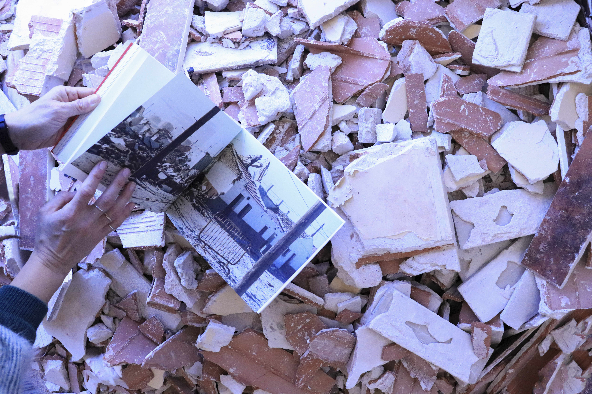

La exposición Casas Bajas es un homenaje a la memoria colectiva: un espacio para reflexionar sobre el impacto del urbanismo en nuestras vidas, tanto antaño como en la contemporaneidad, y una invitación a redescubrir las raíces de los barrios y reflexionar sobre las historias que conforman la identidad urbana y social de nuestras ciudades.
Los movimientos vecinales consiguen transformar el paisaje de los barrios gracias a su lucha por unas condiciones de vida dignas, pero si miramos atentamente a nuestro alrededor, siempre encontramos huellas que nos hablan del pasado del barrio y de su antigua configuración. La ciudad se va construyendo a través de una serie de capas que el tiempo va dejando y que nos permiten explorar en el paisaje del presente cuáles fueron las raíces del lugar que habitamos. También a menudo, las nuevas capas que la historia va depositando en nuestros barrios consiguen borrar parte de las huellas del pasado, es entonces cuando tenemos que acudir a otras fuentes de información que nos ayuden a explorar la historia del desarrollo urbano de los barrios. Podemos afirmar que el movimiento vecinal sigue estando activo en nuestros barrios y que la memoria viva de todo lo caminado sigue presente para ser escuchada y servir como aprendizaje que nos ayude a pensarnos en el presente como vecinos y vecinas.
Esta página web, a imagen del Espacio de Lectura con el que contó la exposición, se configura como un lugar de encuentro y reflexión, construido a partir de los documentos de la exposición, textos, imágenes y otros materiales relacionados, permitiéndonos tejer una narrativa que da cuenta del impacto y la relevancia de las luchas vecinales en el tejido social y cultural de la ciudad.
Créditos
Las fotografías: Santi Vaquero
Santi Vaquero nace en La Puebla de Almoradiel en 1951. Molinero, campesino, albañil, activista y sobre todo captador y donante de imágenes. Vivió durante muchos años en Vallekas, donde estuvo involucrado en sus movimientos vecinales y actualmente reside en Iruña. Entre 2022 y 2023 Un Barrio Saliendo del Barro fue la primera muestra de Santi en Madrid que itineró por diversos espacios de la ciudad y que tuvo como resultado el fotolibro que tomó el título de su primera exposición.
Los textos: La Liminal y CCCQS
La Liminal es un colectivo de mediación cultural fundado en 2015 por Beatriz Martins Orozco y Yolanda Riquelme García, que investiga sobre la ciudad desde una perspectiva antropológica. Utiliza el recorrido urbano como herramienta para analizar el espacio público de forma colectiva.
El comisariado: Jara Blanco, Mia de Diego y Javier Vaquero
Jara Blanco
Javier Vaquero nace también en La Puebla de Amoradiel, en 1984). Es creadore y coreógrafe tanto a nivel individual como conjuntamente y ha presentado sus creaciones tanto en Europa como en América Latina. Además, desde hace más de 5 años viene desarrollando una labor como docente en diferentes universidades, instituciones y escuelas privadas, con una fuerte vinculación hacia proyectos comunitarios y de mediación en escénicas.
Mia de Diego es comisaria y gestora cultural, con experiencia en ferias de arte, galerías y colectivos militantes. Sus investigaciones se centran en teorías de género y feminismo. Su trabajo de creación y exhibición se centra en el arte como medio de educar y producir transformaciones sociales. En el CCCQS participa en la producción de exposiciones y programación de actividades de forma colaborativa.
Web: Desmusea
Formado por Clara Harguindey y Daniel Pecharromán, Desmusea explora la potencia de la virtualidad como medio de encuentro entre instituciones culturales y ciudadanía. Su trabajo investiga y experimenta con la tecnología como un elemento clave en el pensamiento contemporáneo, y con la mediación cultural como herramienta para ampliar los marcos de reflexión y sensibilidad.